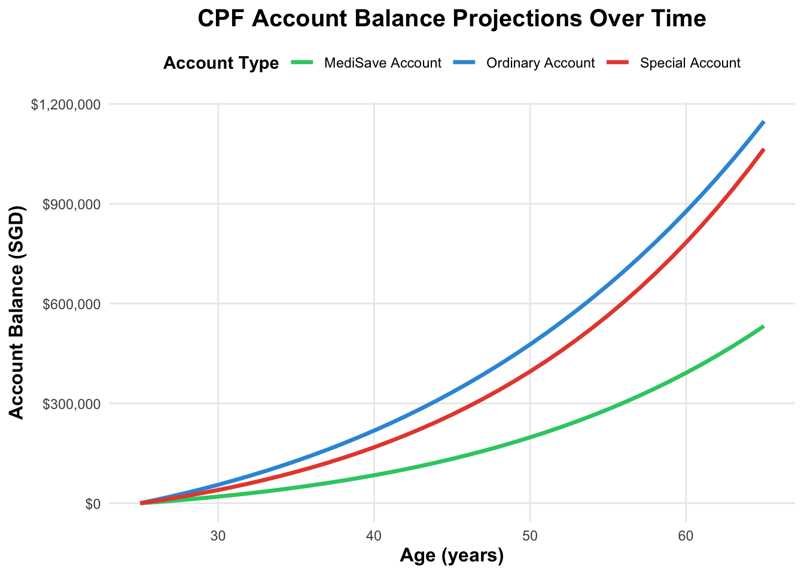

Data Visualization
Financial Planning Visualization
Overview
This visualization shows the projected growth of CPF (Central Provident Fund) balances over time, created as part of my database systems coursework.
The Visualization
What Was Visualized
This line chart displays quantitative financial data with the following numeric components:
- X-axis: Age in years (25 to 65) - continuous numeric variable
- Y-axis: Account balance in Singapore Dollars (SGD) - monetary values
- Three line series: Each representing a different CPF account type with their respective balances
The visualization encodes real numerical values showing how money grows over time based on compound interest calculations.
Sample Numerical Data
| Age | Ordinary Account | Special Account | MediSave Account |
|---|---|---|---|
| 25 | $0 | $0 | $0 |
| 30 | $55,452 | $39,715 | $19,858 |
| 35 | $127,023 | $94,361 | $47,180 |
| 40 | $218,237 | $168,178 | $84,089 |
| 45 | $333,308 | $266,490 | $133,245 |
| 50 | $477,260 | $395,956 | $197,978 |
| 55 | $656,080 | $564,896 | $282,448 |
| 60 | $876,890 | $783,682 | $391,841 |
| 65 | $1,148,155 | $1,065,222 | $532,611 |
Data Source and Assumptions
The numerical data is calculated based on:
Official rates: - CPF contribution rates from CPF Board (2024) - Interest rates: OA (2.5% p.a.), SA (4% p.a.), MA (4% p.a.)
Calculation assumptions: - Starting monthly salary: SGD $3,500 - Annual salary increment: 3% - Contribution percentages: OA (23%), SA (16%), MA (8%) - Time horizon: 40 years (age 25-65) - No voluntary contributions or withdrawals
All values are computed using compound interest formulas with these parameters.
Rationale for Visualization Method
I chose a line chart because:
Time-series data: Line charts excel at showing how numeric values change over continuous time periods
Trend visibility: The upward curves clearly show exponential growth from compound interest - the steeper slopes in later years are immediately visible
Multiple comparisons: Three distinct colors allow easy comparison of how different account types grow at different rates
Continuous nature: Age progression is continuous, not discrete - line charts represent this better than bar charts
Financial convention: Line charts are standard for showing investment growth, making interpretation intuitive
Numeric relationships: The visual distance between lines represents actual dollar differences
Why NOT alternatives:
- ❌ Bar chart: Would create visual clutter with 40+ bars per account type
- ❌ Stacked area chart: Makes it difficult to read individual account values accurately
- ❌ Scatter plot: Would suggest discrete data points rather than continuous progression
- ❌ Pie chart: Cannot show changes over time
Story Behind This Visualization
The Context
This visualization was created for my Fintech Finance Course at SIT. The assignment involved:
- Planning retirement for a hypothetical individual
- Display the impact of compound interest over time
- Visualize the results meaningfully
Key Insight Discovered
The visualization revealed something surprising: the last 10 years of savings (age 55-65) contribute almost as much absolute value as the first 20 years (age 25-45).
Why? Compound interest. By year 30, you’re earning interest on decades of contributions AND their accumulated interest. The raw numbers showed this, but the upward curving lines made it intuitively clear.
Key Insights from the Data
Numerical findings:
- Compound interest power:
- Age 30 (5 years): Total ≈ $115,000
- Age 50 (25 years): Total ≈ $800,000
- Insight: The middle 20 years contribute 7x more than the first 5 years
- Account type differences:
- Special Account grows at 4% vs. Ordinary Account at 2.5%
- Over 40 years: This 1.5% difference creates over $80,000 additional value
- Takeaway: Small percentage differences compound dramatically over time
- Early vs. late contributions:
- $1,000 contributed at age 25 grows to ~$2,685 by age 65 (2.69x)
- $1,000 contributed at age 45 grows to ~$1,480 by age 65 (1.48x)
- Conclusion: Starting early provides 82% more growth per dollar invested
Educational Value
This project helped me understand:
- Data visualization principles: How to choose appropriate chart types for quantitative time-series data
- Compound interest mathematics: The exponential nature of investment growth with concrete numbers
- Effective communication: Transforming raw numerical data into clear, actionable insights
- Financial literacy: Understanding Singapore’s CPF system through quantitative modeling
Conclusion
This visualization successfully transforms quantitative financial data (ages, currency amounts, interest rates) into a visual format that reveals patterns invisible in raw numbers. The line chart immediately communicates that:
- Early contributions have disproportionate impact (visible in curve accumulation)
- Higher interest accounts grow significantly faster (visible in line separation)
- Growth accelerates exponentially over time (visible in steepening curves)
The key achievement: converting hundreds of individual numeric calculations into a single comprehensible story about the mathematical power of compound interest and the importance of early financial planning.